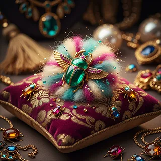

🎩 Pelusa Primogénita del Barón
Clasificación: Pelusa fundacional de ombligo, edición Heredero Imperial.
Origen: Conservada desde la primera toilette oficial del pequeño Barón Von Fluffington III, depositada con máximo cuidado sobre un cojín de brocado entre amuletos, medallones y escarabajos joya de la familia.
Descripción del Barón: Aseguro sin modestia que esta pelusa guarda la primera chispa de mi ego imperial. Sus mechones en tonos crema, turquesa y fucsia dibujan una pequeña aurora boreal lanuda, coronada por un escarabajo esmeralda que yo mismo declaré guardián oficial: protector de mis siestas gloriosas, mis rabietas teatrales y mis tempranos sueños de grandeza.
Nota Aromática: Leche tibia, talco perfumado, colonia infantil muy suave y un fondo de terciopelo recién aireado.